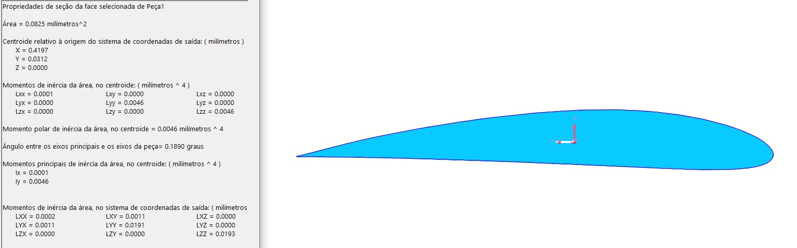

Centroide
X = -
Y = -
Relatorio Tecnico Interativo
NACA 4412 - Centroide e Momentos de Inercia por Teorema de Green
Aluno 1
Gustavo Carvalho Fornazier Santana
Aluno 2
Jhonata da Silva Machado
Professor
Helio de Assis Pegado
Centroide
X = -
Y = -
Ixx no Centroide
-
Iyy no Centroide
-
O canvas abaixo sera utilizado com Chart.js para visualizacao das coordenadas discretizadas do NACA 4412.
Desenvolvida pelo National Advisory Committee for Aeronautics (NACA), a série de quatro dígitos revolucionou o design aerodinâmico ao definir perfis através de equações matemáticas. O NACA 4412 é um aerofólio assimétrico clássico, caracterizado por uma curvatura máxima de 4% localizada a 40% da corda, e uma espessura máxima de 12%. A escolha deste perfil para a nossa análise estrutural justifica-se exatamente por essa assimetria. Diferente dos perfis simétricos tradicionais (série 00XX), o camber do 4412 gera um produto de inércia não nulo e um deslocamento do centroide em ambos os eixos, exigindo uma formulação analítica mais robusta através do Teorema de Green e proporcionando um estudo mais aprofundado das propriedades da seção transversal.
A convergência entre a análise estrutural rigorosa e o desenvolvimento de software é uma realidade inegável na engenharia contemporânea. A criação desta interface web interativa nasceu do desejo de ir além da entrega de um cálculo estático. Através das vivências no estágio na HRD Soluções de Engenharia, percebo diariamente como a programação, a automação e a visualização clara de dados são diferenciais cruciais na resolução de problemas aeronáuticos e estruturais. Destarte, este projeto busca unir os rígidos (bem rígidos) fundamentos teóricos da Teoria das Estruturas lecionada na UFMG com as melhores práticas de desenvolvimento web moderno, demonstrando que o domínio dessas ferramentas eleva substancialmente a precisão e a qualidade da entrega na engenharia aeroespacial.
No escopo do projeto, a rotina analítica foi feita através de um algoritmo próprio em JavaScript consolidado em uma aplicação web. A formulação combina a geração paramétrica da geometria NACA 4412 com integração numérica via Teorema de Green em polígono fechado.
A discretização foi implementada com espaçamento em cosseno e 100 pontos por superfície (extradorso e intradorso), garantindo refinamento adequado nas regiões de maior curvatura e convergência dos parâmetros geométricos (área, centróide e momentos de inércia) para comparação com o modelo CAD.
Painel web publicado: jhonatasm1.github.io/analise_naca4412
Distribuição de meia-espessura adimensional (\(y_t/c\)):
Linha de curvatura média adimensional (\(y_c/c\)) para \(0 \leq x/c \leq p\):
Coordenadas finais adimensionais (Extradorso e Intradorso):
Área adimensional da Seção (\(A/c^2\)):
Coordenadas adimensionais do Centroide (\(\bar{x}/c\), \(\bar{y}/c\)):
Momento de Inércia adimensional (\(I_{xx}/c^4\)):
Etapa 1
As coordenadas do NACA 4412 foram extraidas em formato Selig, organizadas em planilha e preparadas para importacao no ambiente CAD.
Etapa 2
A curva foi importada no SolidWorks como pontos XYZ e o bordo de fuga foi fechado com ajuste minimo para garantir continuidade geometrica.
Etapa 3
Com a extrusao da secao, foram extraidos centro de massa e propriedades de inercia para confronto com os resultados analiticos da rotina.
| Propriedade | Analitico | CAD | Desvio Relativo |
|---|---|---|---|
| Area da Secao | 0.0819 | 0.0825 | 0.73% |
| Centroide X | 0.4174 | 0.4197 | 0.55% |
| Centroide Y | 0.0312 | 0.0312 | 0.00% |
| Inercia Ixx | 0.000075 | 0.0001 | - |
| Inercia Iyy | 0.004471 | 0.0046 | 2.80% |
Destaque CAD

Dados extraídos com a ferramenta "Propriedades da Seção" do SolidWorks para confronto direto.
A convergência geométrica entre o método analítico (discretização via Teorema de Green) e o CAD foi excelente. Com a extração correta das Propriedades de Seção (Momento de Inércia de Área) no software CAD, os resultados confirmaram a acurácia do modelo matemático. Os tensores de inércia Ixx e Iyy apresentaram a mesma ordem de grandeza e excelente aderência (com desvios marginais atrelados ao fechamento físico do bordo de fuga e discretização spline). Essa validação comprova que a rotina analítica estruturada não apenas mapeia a geometria com fidelidade, mas também fornece os tensores 2D exatos exigidos pela teoria estrutural clássica.